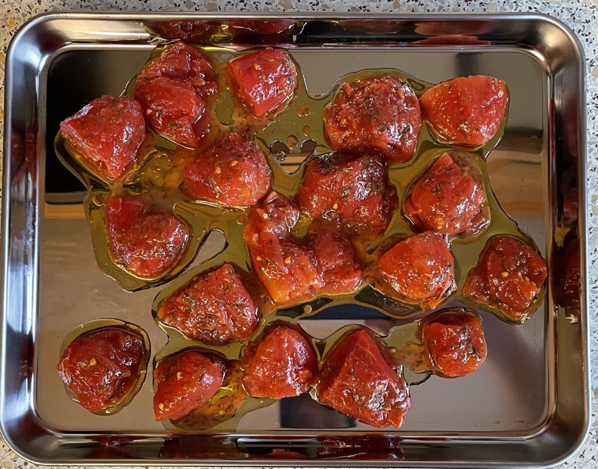
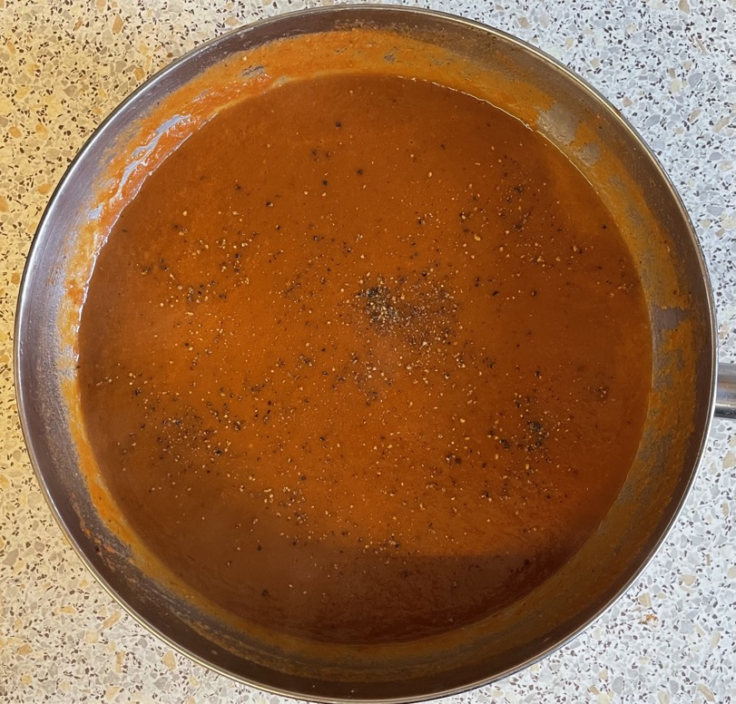

Winter tomato soup
Dried tomatoes
- Leave to soaked in sauce pan
- 80g sun-dried tomatoes (not oil)
- 500ml water boiling
- 1 tsp sugar
- Remove soaked tomatoes and blitz
Tinned tomatoes
- Drain liquid into sun-dried tomato pan
- 2 tins whole peeled tomatoes halved
- Mix tomatoes with
- 2 tbsp olive oil
- 1 tsp thyme
- Roast at 190°C for 30 mins
- Roughly chop
Soup
- Cook for 5 mins
- 2 tbsp olive oil
- 1 red onion thinly sliced
- 1 carrot diced
- Add and cook for 2 mins
- 1 tbsp garlic chopped
- Add and bring to boil then simmer for 35 mins
- 800ml stock (1 no salt cube + ½ stock pot)
- liquid from sun-dried tomatoes
- soaked tomatoes
- roasted tomatoes & juices
- Season to taste with salt and pepper
- Blitz till smooth
Serving
Notes
- Made: 2 Jan 2023, too salty with one salt stock pot
Pics

